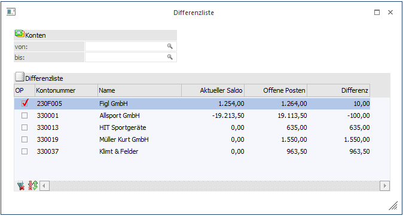

Die Differenzliste kann über den Menüpunkt
1 WinLine FIBU
1 Auswertungen
1 Offene Posten
1 Differenzliste
abgerufen werden.
Die Differenzliste weist sämtliche Personenkonten aus, bei denen ein Unterschied zwischen dem FIBU-Saldo und dem OP-Saldo besteht.
Eine Differenz zwischen FIBU- und OP-Konto kann nur dann vorkommen, wenn ein Personenkonto mit dem Sachbuchungsschlüssel B anstelle von DF, DZ, KF oder KZ bebucht worden ist -dann wird der Betrag nämlich nicht im OP-Bereich berücksichtigt- oder wenn ein Zahlungsstapel in Schwebe ist, da der Bankauszug noch nicht gegengeprüft wurde:
Bei der Funktion Zahlungsstapel buchen werden die OPs als ausgeglichen markiert, während der FIBU-Stapel nur vorbereitet, aber nicht sofort abgesetzt wird.
Hinweis
Die Differenzliste kann nur im "aktuellen" Wirtschaftsjahr und nicht in einem der Vorjahre geöffnet werden! Daher sollte die Differenzliste vor einem Jahresabschluss geprüft werden.

Bedienung
Nachdem der Menüpunkt angewählt wurde, gibt es verschiedene Möglichkeiten:
ü Ausgabe einer Differenzliste auf Bildschirm oder Drucker.
Aus der Auswahllistbox kann gewählt werden, ob die Ausgabe am Bildschirm oder am Drucker durchgeführt werden soll. Weiters ist es auch möglich sich die Ergebnisse mittels 'Anzeigen' nur in der Tabelle anzeigen zu lassen, die auch durch Drücken der F5-Taste gestartet werden kann.
Ø Konten von - bis
können die Konten eingeschränkt werden, für die die Differenzliste ausgegeben werden soll.
Durch Anklicken des Liste-Buttons wird die Ausgabe der Liste entsprechend den Einstellungen durchgeführt.
ü Anzeige aller Differenzen in der
Tabelle
Durch Anklicken des Anzeigen-Buttons werden alle Konten, die eine
Differenz aufweisen angezeigt. Dabei wird neben der Kontonummer und dem
Kontonamen auch noch der FIBU-Saldo, der OP-Saldo und die Differenz ausgewiesen.
Durch einen Doppelklick auf die Kontonummer wird das OP-Blatt des ausgewählten
Kontos aufgerufen. Damit kann ggf. festgestellt werden, wie die Differenz
zustande gekommen ist.
ü Erstellen einer Offenen Post über
den Differenzbetrag
Wenn die Checkbox "OP" vor einer Kontonummer aktiviert
wird, kann für dieses Konto über die Differenz eine neue Offene Post erzeugt
werden.
Durch Anklicken des Alle-Buttons können alle Konten, die in der Tabelle angezeigt werden, aktiviert werden.
Durch Anklicken des Umkehr-Buttons werden alle Optionen ins Gegenteil verkehrt, d.h. alle selektierten Konten werden deselektiert und alle deselektierten Konten werden selektiert.
Beispiel
Wenn der Menüpunkt aufgerufen und danach die Liste angezeigt wird, sind grundsätzlich alle Konten deselektiert. Wenn nun für alle Konten OPs erzeugt werden sollen, muss nur der Umkehr-Button angeklickt werden - dadurch werden dann alle Konten selektiert.
Durch Anklicken des OK-Buttons wird für alle Konten, bei denen die Option OP selektiert wurde, über den Differenzbetrag eine OP gebildet, wobei die OP die Ersatzfakturennummer bekommt (die Ersatzfakturennummer kann in den Offenen Posten Parametern eingestellt werden).
Durch Anklicken des Ende-Buttons wird das Fenster geschlossen.